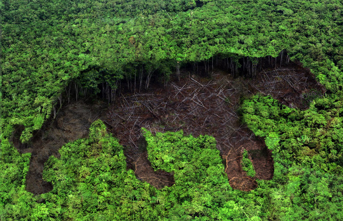

Вымершие опасные твари

Мы зачастую слышим, что всё больше и больше видов животных находятся на грани исчезновения, и их вымирание является
лишь вопросом времени. Неумолимое расширение мест деятельности человека, таких как охота, уничтожение естественной
среды обитания, изменение климата и другие факторы вносят свой вклад в скорость вымирания видов, которая в 1000 раз
больше, чем естественный уровень. Несмотря на то, что вымирание видов является трагедией, иногда оно может быть полезным
для определенного вида ... нашего! От 12-метровой мега-змеи и летающих существ размером с жирафа, сегодня мы расскажем
вам о двадцати пяти потрясающих вымерших существах, которых, к счастью, больше не существует.